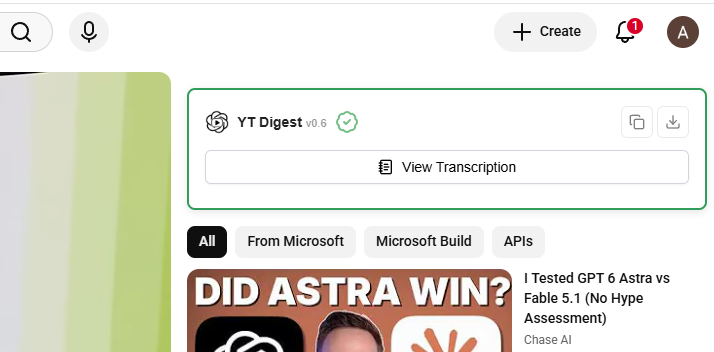
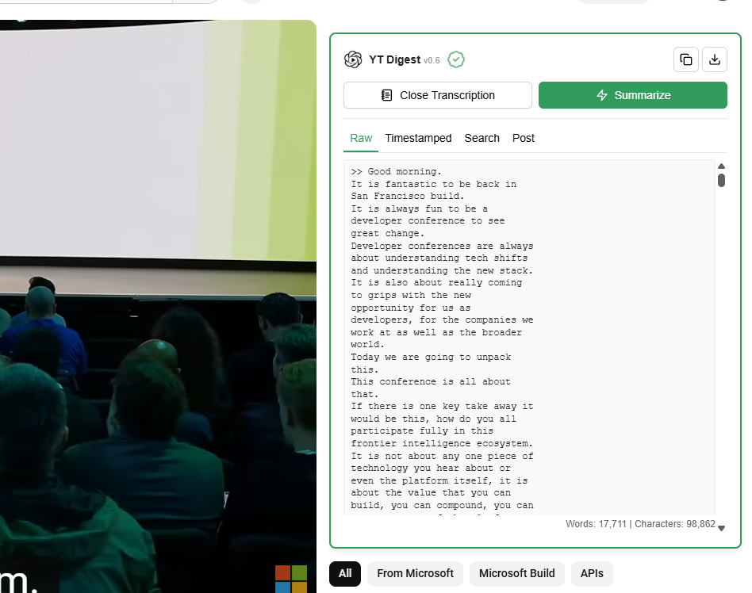
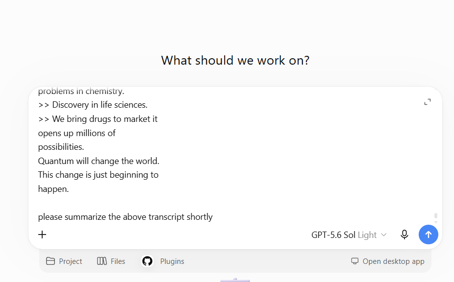
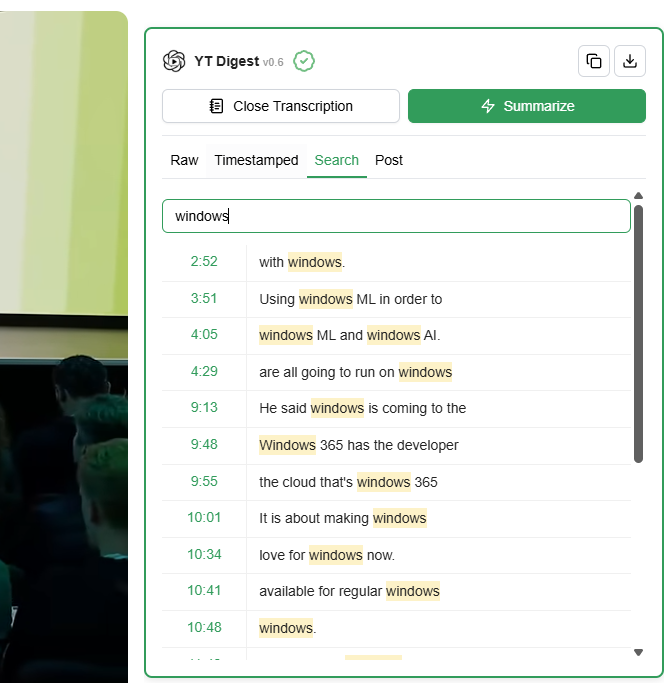
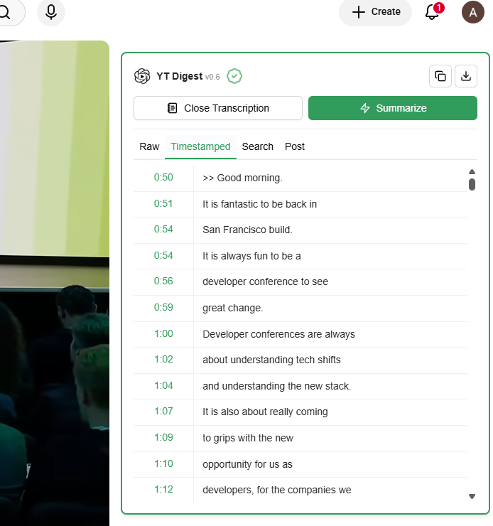
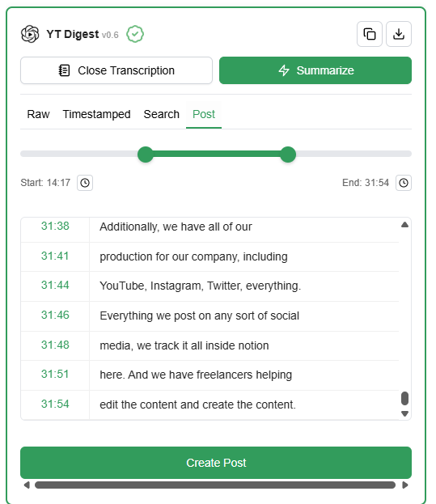

From YouTube transcript to your own ChatGPT conversation.
MADE FOR YOUR NEXT DEEP DIVE
Lectures · Podcasts · Tutorials · Interviews
SMARTER YOUTUBE SUMMARIES
Read. Search. Understand more.
Read, search, and summarize YouTube videos—get the key insights without watching every minute. One click.

1. Click View Transcription beside the video.

2. Read the extracted subtitles in the transcript panel.
01 / YOUTUBE TRANSCRIPTS
Get a readable YouTube transcript in one click.
Click View Transcription to extract the video’s available subtitles into a readable transcript. Skim a lecture, revisit an explanation, or read along at your own pace.
Read the text in Raw view.
Switch to Timestamped to follow the video line by line.
Works with videos that have available subtitles.

The transcript and prompt are ready. You decide what to ask and when to send.
02 / CHATGPT SUMMARIES
Take the transcript to ChatGPT. Make the prompt yours.
Click Summarize to open ChatGPT with the transcript and a suggested prompt already inserted. Edit the prompt if you want, then press Enter or click Send to start.
Ask for a short summary, key takeaways, or a deeper explanation.
Continue with follow-up questions in your own chat.
No API key required. The prompt is never submitted automatically.

Search. Find a word or topic and see its matching timestamps.

Jump. Click a timestamp to return to that moment.
Scroll sideways to see timestamp navigation →
03 / SEARCH & TIMESTAMPS
Find the exact moment. Skip the endless scrubbing.
Open Search and type a word or topic. YTDigest highlights matching text and shows where it appears. Click a result’s timestamp to jump straight to that part of the video.
Locate a quote or explanation in a long podcast.
Review key moments from lectures and tutorials.
Use Timestamped view to navigate the full transcript.
1 Copy transcript2 Download transcript
Find Copy and Download in the top-right corner of the transcript panel.
04 / COPY & DOWNLOAD
Keep the transcript. Use it in your next step.
Once the transcript is loaded, click Copy to put it on your clipboard, or Download to save it as a file. Move from watching to notes, research, or a document you can revisit.
Paste the transcript into your preferred notes app.
Save a copy for later reference.
Keep useful video content close to your work.

Choose the start and end of a segment, review the excerpt, then click Create Post.
05 / VIDEO SEGMENTS TO SOCIAL POSTS
Turn one great moment into your next post.
Open the Post tab and select the part of the video you want to work with. Adjust the start and end points, review the transcript excerpt, then click Create Post to take the selected text and a post-writing prompt to ChatGPT.
Focus on a specific idea instead of the entire video.
Use the segment range and timestamps to choose your excerpt.
Review or edit the prompt in ChatGPT before sending it, then shape the post for your audience.
FROM VIDEO TO UNDERSTANDING
Three steps. A lot less rewinding.
01
Add YTDigest to Chrome
Install the extension from the Chrome Web Store.
02
Open a YouTube video
Play a video with captions available, then load its transcript with YTDigest.
03
Make the ideas yours
Read, search, or jump to a timestamp. Choose Summarize, review or edit the prompt in ChatGPT, then send it.
GOOD QUESTIONS
A little more before you install.
What is YTDigest?
YTDigest is a Chrome extension that extracts available YouTube transcripts, makes them searchable, and sends transcript text to ChatGPT for summaries and questions. It also lets you navigate videos by timestamp and work with selected segments.
Is YTDigest free to use?
Yes. YTDigest is free to use and does not require an API key. ChatGPT is a separate service with its own account requirements and usage limits.
Does it work on videos without subtitles?
YTDigest currently works with videos that have available subtitles. Transcription for videos without subtitles is not currently supported.
Can I summarize only part of a video?
Yes. Select a segment to focus on one discussion, explanation, or idea instead of summarizing the entire video.
Can I ask ChatGPT questions about the video?
Yes. Once the transcript is in ChatGPT, you can ask follow-up questions, request an explanation, or explore a topic in more detail. Check important answers against the original video.